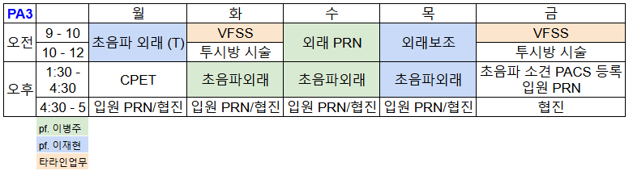

1 기본사항
- 스케줄

연락처
- 이병주 교수님 (lbjinishs@gmail.com)
- 이재현 교수님 (sense0906@gmail.com)
- 김윤영 PA (kyy704@naver.com)
- 전공의 n년차 000
- 투시방(7362)
- 낮병동(7571)
- 적정관리팀(7670) - CP 수정
- 외상센터 외래(8718) - 손도리나
2 외래 업무
2.1 심장재활 환자
- 추가 예정
2.2 근골격계 환자교육
근골격계 외래초진환자는 대부분 잘못된 자세습관, 운동방법이 몸에 배어있다.
때문에 척추와 어깨, 무릎 관절 등에 대한 생체역학 지식에 기반한 올바른 자세와 일상생활 동작의 습관화, 즉 행동치료가 필요하다.
물리치료실에서 시행하는 운동치료에 선행/병행되어야 한다.
각 소주제에 대한 교육용 리플렛 8개를 홍보실에서 제작해서 활용.
- ADL education
- Lordosis
- Sagittal alignment
- Pelvic tilt / Hip hinge
- 의자 / 침대 / 승하차 / 물건들기 교육
- Lumbar MKz exercise
- prone / sitting / standing
- 이 후 운동프로그램은 PT실에서 진행 예정
- ADL education
- Lordosis
- Sagittal alignment
- 모니터 / 휴대폰 / 운전 / 배게사용 교육
- 고개꺾기, 턱당기기 금지
- Cervical MKz exercise
- Scapular elevation&retraction exercise
- ROM exercise; static passive ROM for all range
- ER / IR / Fx / Ab / Ex
- close chain
- holding at end-range
- scapular stretching - round shoulder
- CHL stretching
- ADL education
- impinge 유발 회피 교육 (abduction or flexion over 90 degree)
- avoid pain provocation
- scapular stretching
- Retraction-Protraction
- 이 후 운동프로그램은 PT실에서 진행 예정
- ADL Education
- full flexion 회피, 바닥앉기, 무릎꿇기 회피
- 높은 계단, 가파른 등산 회피
- Q-setting, heel lift exercise
- ADL education
- 손목 및 악력 사용 줄이기 (걸레짜기, 병 돌려따기)
- Elbow band : 2 finger below epicondyle (중앙보조기)
- Common extensor/flexor tendon stretching education
- Eccentric contraction exercise
- 통증 없어지면 저강도로 시작
- ADL education
- 바닥이 단단하고, 발목까지 잡아주는 신발
- 크록스나 바닥이 물렁한 신발 신지 않아야됨
- exercise
- Calf stretch - static passive stretching
- eccentric contraction - Heel drop (bodyweight to resistive)
- 시술 주의 사항
- 시술 후 통증
- 시술 후 외래 방문
3 척추 인터벤션
3.1 시술 전 준비
화요일과 금요일 오전 (VFSS 다음)
- 외래환자
- 시술 전날, 낮병동(A동 2층) 입원 예정 환자의 CP등록 및 처방
- 교수님별 CP처방 수정
- pf. 이재현 : 1레벨에 Dexa 2개(따로 지시 있으면 Tamceton 1개), Hirax 안씀, Skin protect 안 씀
- pf. 이병주 :
- 교수님별 CP처방 수정
- 전날까지 pre-intervention list 작성(\200.2.24.113), 시술 당일 특이사항 있으면 같이 확인 및 교수님에게 보고
- 외래에서 계획된 level, 방향, 환자특성(transient vertebrae, alar 위치), 이전 시술력(본원, 타병원- 당시 residual pain 등)
- 당일 오전, 환자가 낮병동 입원하면 동의서획득 및 시술 처방
동의서 : “인터벤션 및 조영제사용 동의서”
시술 처방 : “RM S.T.E” 처방 중 부위와 갯수 선택
- 투시실(A동 1층, 7362)에 연락해서 시간 확인 후 낮병동에 알려준다.
- 시술 전날, 낮병동(A동 2층) 입원 예정 환자의 CP등록 및 처방
- 입원환자
- 재활의학과 및 타과 협진환자의 경우, 시술 전날 set처방을 교수님 별로 수정 처방
- 시술 전까지 동의서 획득 및 “RM S.T.E” 처방
3.2 시술 보조
- 침대 및 환자 준비 (2024.05.17 update)
- 산소 및 혈압 모니터 연결, 혈압측정
- 요추 - 시술레벨 아랫배에 베개 1개 받침
- 경추 - 환자복 거꾸로 입기 - 좌측인 경우 다리가 먼저 들어가도록 - 바로 누워서 건측으로 머리를 돌리고 환측 어깨부터 턱 아래까지 드랩
- 주사 전 상차림 보조
- 교수님별 Regimen
- pf. 이재현 :
- Skin Anesthesia : 3cc syringe + 25G needle
- 2% lidocaine 1cc + N/S 1cc
- Medication : 5cc syringe + 22G spinal needle (경추는 25G)
- lumbar : ropivacaine 0.5cc, normal saline 2~3cc, tam 1v (dexa 2@ for complicated case)
- cervical : normal saline 2cc, dexa 2@
- Contrast : 5cc syringe + extension line
- 18G needle : 빠른 제조 위해서
- Skin Anesthesia : 3cc syringe + 25G needle
- pf. 이병주 :
- pf. 이재현 :
- 주사 중 환자 확인
- 경추의 경우 리도카인 테스트 & 스테로이드 주입할 때 반응 확인
- “주먹을 쥐었다 폈다 해보세요”
- “발목을 까딱까딱해보세요”
- “숨이차거나, 이상한 맛이 나지는 않나요?”
주사 후 혈압 재측정, 메딕스 드레싱, N/S으로 주변 소독약 닦아내기
환자 이동, pain provocation 위치, 양상을 확인
3.3 시술 후 기록
- ‘시술기록 - 공통’ / ‘당일 입퇴원 기록’ 임시저장
- 예문 활용
- ‘시술기록 - 공통’ 에 pain provocation 위치, 시술 전 후 혈압 기록
- ’당일 입퇴원 기록’에는 PACS에 올라온 시술 마지막 사진 붙여넣기
- 퇴원지시
- 시술 경과 평가 위해 3주 후 외래 f/u
- 퇴원약 처방
- NSAIDs / PPI 7일
- 환자 주사 시 pain-provocation 심했거나, peri-neural injection 양상 이었거나, 환자가 그냥 원하는 경우
4 초음파 인터벤션
4.1 Prep
- 초음파 기기 준비
- ‘초음파(ultrasound)’ 처방만 있었으면, ‘관절 초음파’ 처방 등록
- 환자 선택 및 검사 시작
- D동 외래 페달 준비
- 프로브 선택 / gel 도포
- 어꺠/무릎/고관절 : 12Hz 이상 Linear probe & MSK 세팅
- 팔꿈치, 손목, 발목, 손, 발
- D동 : high frequency linear probe & depth 2cm
- T동 : linear probe & finger 세팅 & depth 2cm
- 척추 : curved probe 선택, Depth 6cm 로 조정
- 환자 포지션
| 어깨 | 민소매 환자복으로 환복. 초음파 앞 둥근 의자에 앉아 무릎위에 손바닥이 보이게 올려놓음 |
| 무릎 | 바지가 안올라가면 환복. 검사하려는 무릎이 침대 바깥쪽에 오게 누워서, 무릎 아래 배게 받침 |
| 팔꿈치 | 환자를 침대에 앉히고 ㄷ테이블 위에 팔꿈치를 90도 굴곡 & 내회전 또는 외회전 시켜 놓음 |
| 손목, 손 | 환자를 침대에 앉히고 ㄷ테이블 위에 손을 올리고, 손목 아래 배게 받침 |
| 발 | 환자를 침대 바깥으로 발목 이하가 나오도록 눕힘 |
4.2 Regimen(이재현 pf.)
- tamceton 혹은 dexa로 약을 준비하고, 나머지는 lidocaine을 약 0.5% 농도로 준비
- IA : 22G spinal needle
- 20cc : lido 2% 5cc + N/S 15cc + tam 1v
- 10~15 cc : (체구 작은 여성 or 심한contracture or articular side tear 등의 경우)
- Bursa : 10cc syringe + 25G long needle
- 10cc : lido 2% 2.5cc + N/S 7.5cc + tam 1v
- IA : 23G long needle
- 20cc : ropiva 10 cc + N/S 10cc + tam 1v
- Synovian : 23G long needle
- Aspiration : 빈 20cc 루어락 syringe + 23G needle
- 이후 약 줄때 20cc IA injection 으로 만들어서 주사
- 검체나가자고 하면 검체 내기
- IA & bursa : 25G long needle
- 10cc : ropiva 5cc + N/S 5cc + tam 1v
- Ischial bursa
- CET/CFT : 25G needle
- 4cc : lido 2% 1cc + N/S 3cc + tam 1v
- CTS : 25G needle
- 5cc : Ropiva 1cc + N/S 4cc + tam 1v (국소마취제에 마비감호소 했던 분은 ropiva제외외)
- TF : 25G needle
- 2cc : lido 0.5cc + N/S 1.5cc + tam 1v
- 손발의 Small tendon sheath / joint : 25G needle
- 3cc : Ropiva 1.5cc + N/S 1.5cc + tam 0.5v
- Facet / MBB : 25G long needle
- 5cc : N/S 5cc + triam 1v (양측이면 2개 준비)
- SNRB : 25G long needle
- 5cc : Ropiva 1 cc + N/S 3cc + tam 1v (cervical은 dexa 2@)
- 피부마취 : 3cc syringe + 25G needle : lido 1% 농도로 3cc syringe에 준비
- 쇄척술 : 10cc 루어락 syringe 3~10개 + 18G spinal needle 1개
- 첫 3개는 lido 0.5%로 10cc
- 석회쇄척 잘되면 near clear lavage될 때까지 N/S 10cc 로 계속 만들기
- 건초주사 : Bursa injection 과 동일한 10cc (약 넣자고 하면 N/S syringe 만들기 중단하고 제조)
- 끝나면 거즈와 테이프로 압박드레싱
- 석회나온 시린지는 어두운 배경에 세워서 석회침전시키고 사진찍어 pacs에 등록
- Shoulder IA : 22G spinal needle
- 20cc : lido 2% 5cc + N/S 15cc + tam 1v
- 10~15 cc : (체구 작은 여성 or 심한contracture or articular side tear 등의 경우)
- Shoulder Bursa : 10cc syringe + 25G long needle
- 10cc : lido 2% 2.5cc + N/S 7.5cc + tam 1v
- Knee IA : 23G long needle
- 20cc : ropiva 10 cc + N/S 10cc + tam 1v
- Synovian : 23G long needle
- Aspiration : 빈 20cc 루어락 syringe + 23G needle
- 이후 약 줄때 20cc IA injection 으로 만들어서 주사
- 검체나가자고 하면 검체 내기
- Hip IA & bursa : 25G long needle
- 10cc : ropiva 5cc + N/S 5cc + tam 1v
- CET/CFT : 25G needle
- 4cc : lido 2% 1cc + N/S 3cc + tam 1v
- CTS : 25G needle
- 5cc : Ropiva 1cc + N/S 4cc + tam 1v (국소마취제에 마비감호소 했던 분은 ropiva제외외)
- TF : 25G needle
- 2cc : lido 0.5cc + N/S 1.5cc + tam 1v
- 손발의 Small tendon sheath / joint : 25G needle
- 3cc : Ropiva 1.5cc + N/S 1.5cc + tam 0.5v
- Facet / MBB : 25G long needle
- 5cc : N/S 5cc + triam 1v (양측이면 2개 준비)
- SNRB : 25G long needle
- 5cc : Ropiva 1 cc + N/S 3cc + tam 1v (cervical은 dexa 2@)
4.3 검사 및 시술
- 검사 보조
- D동 : 기록보조 - 해당관절 예문 복사 활용
- 외상외래 : 페달이 없어서 기록보조 보다 검사 보조 - 동영상 저장, depth, focus, power doppler전환 보조
- 시술 보조
- needle insertion 부위 포비돈 스틱으로 6회 swap
- aseptic control 주의
- gel 많으면 닦기
- 마지막 소독 2개는 위에서 아래로 1번 씩만 swap하여 흘러내리지 않도록록
- needle uncap 하여 시술 손에 전달
- 시술 후
- needle insertion 부위 거즈 지혈 및 밴드 드레싱
- 석회쇄척술 환자는 압박드레싱
5 예정 클리닉
5.1 초음파 전문클리닉
- 팽창클리닉 : pressure monitoring 과 비슷한 효과를 내기위한 capsule preserving HD clinic
- portable USG로 반대편에서 LBTS에 effusion이 언제부터 진행되는지 확인, anteiror capsule, RI에서도 확인고려
- 3-way 활용 등 고려
- 석회클리닉 : resorptive phase 중에서도 pain provocating, barbotage 가능 석회인지 판별, barbotage - 정밀검사로 PET 시행 고려가능
- 재생클리닉 : ESWT, PDRN 시행
- 손/손목 중재클리닉 : CTS injection 및 TCTR 준비
5.2 운동 전문클리닉
- 척추클리닉 : 백년운동 개념 채택, PNUH protocol로 development
- 어깨재활클리닉 : SSE 클리닉 PNUH protocol로 development
- 견갑유연성 - scapulohumeral motorcontrol 확인방법 개발
- 무릎부하클리닉 : 무릎운동교육, 부하측정 클리닉, EAG 임상적용 예정